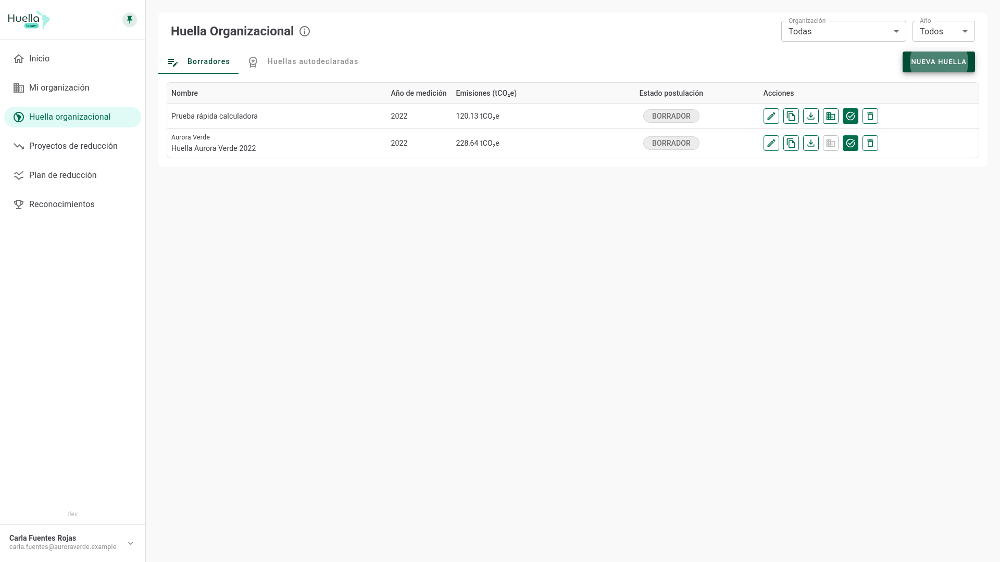
Reconocer las pestañas Borradores y Huellas autodeclaradas, los filtros y las acciones disponibles sobre cada huella.
Recorrer el camino completo: autodeclarar, postular al Reconocimiento de Verificación y responder observaciones.
Saber qué significa el estado de tu huella, qué puedes hacer en cada uno y cómo seguir el avance de tus postulaciones.
En Huella organizacional viven todas las huellas de tus organizaciones. La pestaña Borradores reúne las que aún estás trabajando, con su nombre, organización, año de medición y emisiones en tCO₂e.
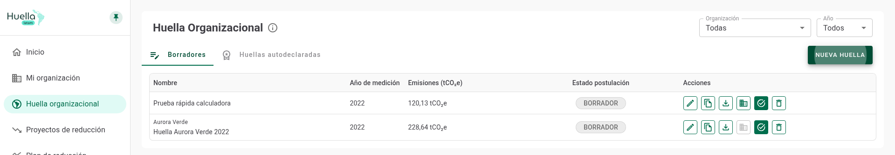
1 2 3 4 5 6El botón Nueva Huella abre el diálogo de creación. Eliges la organización y cómo quieres trabajar; la huella nace como borrador.
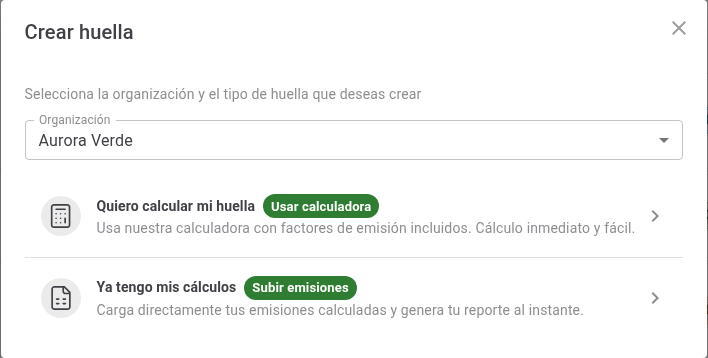
Cada borrador trae seis acciones. Un botón atenuado indica que esa acción todavía no corresponde: al apoyar el cursor sobre él verás el motivo.
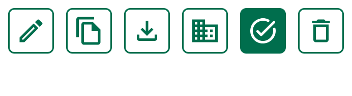
1 2 3 4 5 6Una huella parte como borrador, se autodeclara y, si postulas, entra en revisión. Desde ahí puede quedar aprobada o volver con observaciones para que las resuelvas. Este cuadro resume qué significa cada estado y qué te toca hacer.
| Estado | Dónde lo ves | Qué significa | Qué puedes hacer |
|---|---|---|---|
| Borrador | Pestaña Borradores | La medición está en curso y nadie más la ve. | Editar, asociar organización, autodeclarar. |
| Autodeclarada | Pestaña Huellas autodeclaradas | Declaraste tu huella del año; según la configuración, sumas el Reconocimiento de Medición. | Editar, postular al Reconocimiento de Verificación. |
| En revisión | Columna Estado postulación | Tu postulación fue enviada y está siendo revisada. | Consultar el historial y esperar la respuesta. |
| Con observaciones | Columna Estado postulación | La revisión devolvió comentarios que debes resolver. | Leer las observaciones, corregir y volver a postular. |
| Aprobado | Columna Estado postulación | Obtuviste el Reconocimiento de Verificación para ese año. | Consultar y descargar; la huella queda cerrada. |
En Huellas autodeclaradas conviven todos los años que has declarado. El color de la etiqueta te dice de un vistazo qué huella necesita tu atención.
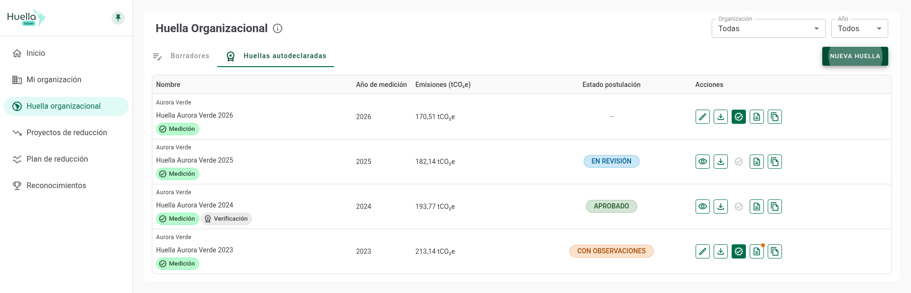
1 2 3 4 5 6Antes de autodeclarar, tu borrador debe estar completo y pertenecer a una organización inscrita. Revisa esta lista:
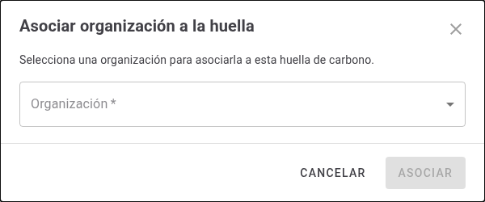
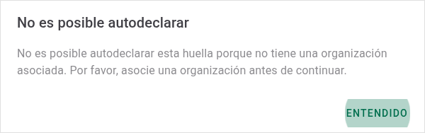
Autodeclarar formaliza la medición del año: la huella pasa a Huellas autodeclaradas. Sigue siendo editable mientras no tenga una revisión en curso.
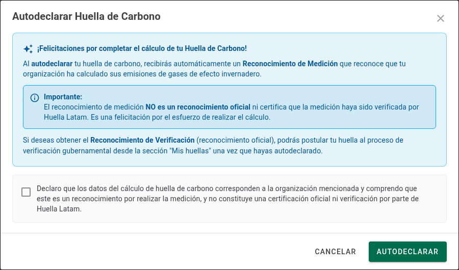
1 2 3 4 5La huella cambia de pestaña y, cuando el reconocimiento es automático, aparece con su sello de Medición. La columna de estado queda con un guion: todavía no hay postulación en curso.
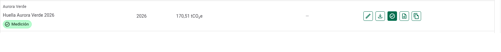
1 2 3 4Ya no puedes eliminar la huella: las acciones apuntan a postular y a seguir el proceso. Duplicar sigue disponible para partir un borrador nuevo.
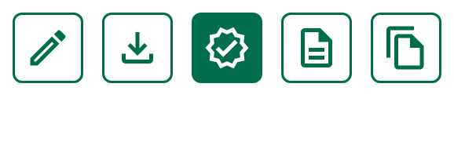
1 2 3 4 5El Reconocimiento de Verificación es el reconocimiento oficial. Al postular, la plataforma revisa primero que la huella esté completa y que tu organización esté asociada, inscrita y sin bloqueos; si algo falta, un aviso te lo indica.
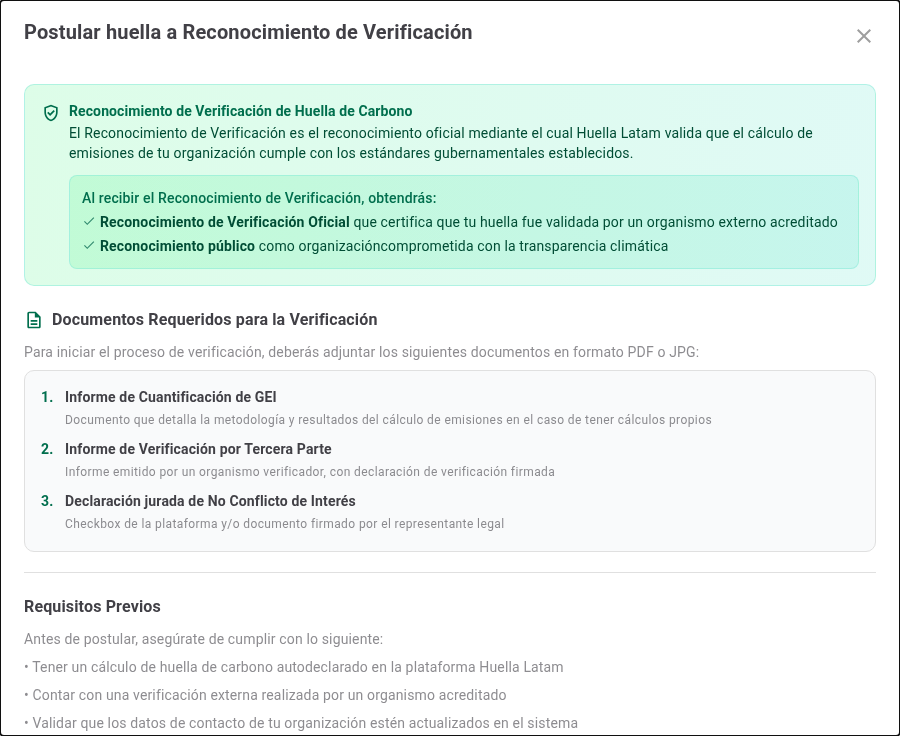
Al bajar en el mismo diálogo completas la postulación. Los datos del postulante se toman de tu organización, así que solo revisas que estén correctos.
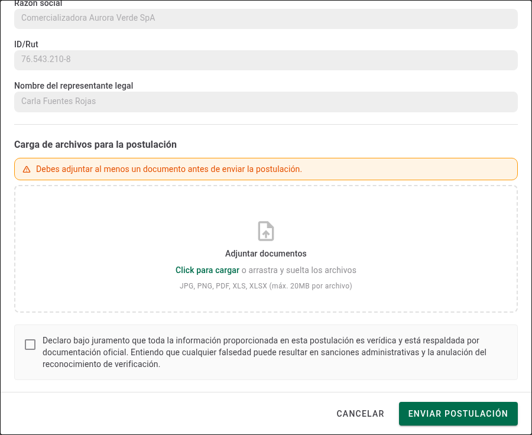
Con la postulación enviada, el historial es tu ventana al proceso: ábrelo con el botón de historial de esa huella.
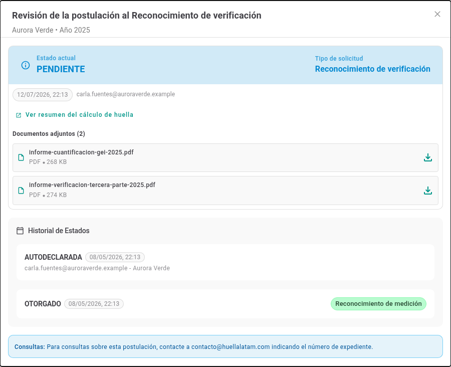
La etiqueta Con observaciones y el punto naranja sobre el historial avisan que la revisión te devolvió comentarios. No pierdes lo avanzado.
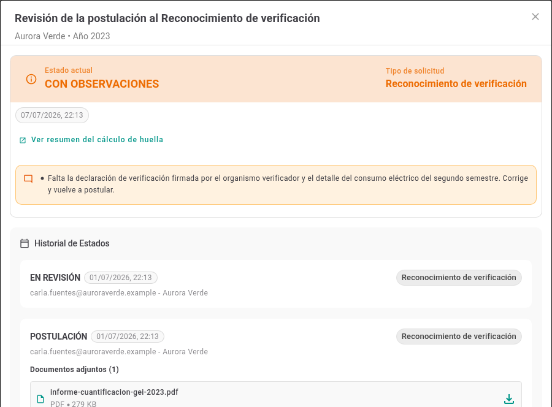
Cuando la postulación se aprueba, el estado pasa a Aprobado y la huella suma el sello de Verificación junto al de Medición.
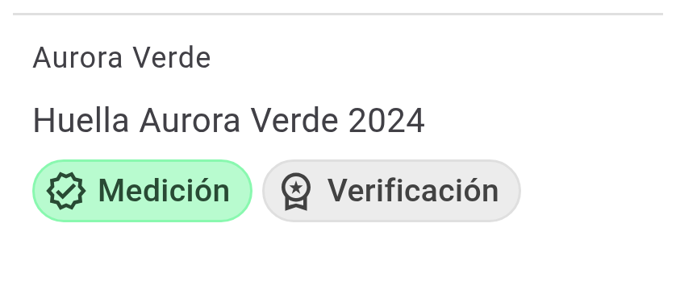
1 2 3